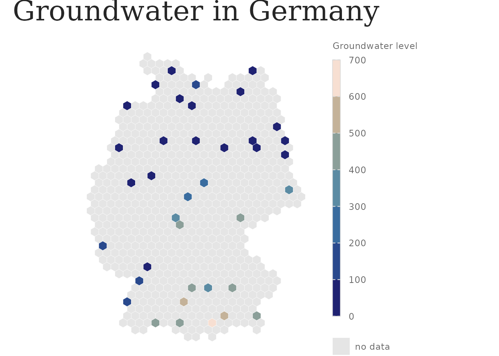

lapidary has three layers: a canonical data
model, analysis primitives, and a
shared visual style. This vignette walks through them
with the packaged sample of GEMS-GER (?gems_ger_sample), so
nothing here needs the full download.
The data model
Every source is normalised to two shapes:
-
gwl_ts— a tidy long tibble, one row per well × timestamp (well_id,date,gwl,variable,source, optionalgwl_flag); -
gwl_wells— ansfPOINT layer of well metadata in EPSG:25832.
data(gems_ger_sample)
gems_ger_sample
#> <gwl_ts> 66,760 rows | 40 wells | 1991-01-07 .. 2022-12-26
#> variable: gwl_m_asl | source: gems-ger
#> # A tibble: 66,760 × 9
#> well_id date gwl variable source gwl_flag water_year water_month
#> <chr> <date> <dbl> <chr> <chr> <fct> <int> <int>
#> 1 MW_1039 1991-01-07 413. gwl_m_asl gems-ger observed 1991 3
#> 2 MW_1039 1991-01-14 412. gwl_m_asl gems-ger observed 1991 3
#> 3 MW_1039 1991-01-21 412. gwl_m_asl gems-ger observed 1991 3
#> 4 MW_1039 1991-01-28 412. gwl_m_asl gems-ger observed 1991 3
#> 5 MW_1039 1991-02-04 412. gwl_m_asl gems-ger observed 1991 4
#> 6 MW_1039 1991-02-11 412. gwl_m_asl gems-ger observed 1991 4
#> 7 MW_1039 1991-02-18 412. gwl_m_asl gems-ger observed 1991 4
#> 8 MW_1039 1991-02-25 412. gwl_m_asl gems-ger observed 1991 4
#> 9 MW_1039 1991-03-04 412. gwl_m_asl gems-ger observed 1991 5
#> 10 MW_1039 1991-03-11 412. gwl_m_asl gems-ger observed 1991 5
#> # ℹ 66,750 more rows
#> # ℹ 1 more variable: reference_period <fct>
validate_gwl_ts(gems_ger_sample)variable records what gwl is (here
"gwl_m_asl", metres above sea level), so series with
different datums never get mixed silently.
To ingest the real dataset:
lap_gems_ger_download() # ~290 MB, once
lap_gems_ger_build_parquet(meteo = FALSE) # CSV -> Parquet, once
gwl <- lap_read_gems_ger(date_range = c("2000-01-01", "2020-12-31"))Adding another source means writing a reader that returns these
shapes; lap_read_correctiv() is a worked second
example.
Analysis primitives
enriched <- gems_ger_sample |>
lap_use_water_year(start_month = 11) |>
lap_add_reference_period(periods = list(Z1 = c(1991, 2020)))
annual <- lap_summarise_wells(enriched, by = c(well_id, year))
head(annual)
#> # A tibble: 6 × 9
#> well_id year min_gwl max_gwl mean_gwl median_gwl sd_gwl n_obs coverage
#> <chr> <int> <dbl> <dbl> <dbl> <dbl> <dbl> <int> <dbl>
#> 1 MW_1039 1991 412. 413. 412. 412. 0.289 52 1
#> 2 MW_1039 1992 412. 413. 412. 412. 0.362 52 1
#> 3 MW_1039 1993 412. 413. 412. 412. 0.262 52 1
#> 4 MW_1039 1994 412. 413. 412. 412. 0.227 52 1
#> 5 MW_1039 1995 412. 413. 412. 412. 0.293 52 1
#> 6 MW_1039 1996 412. 413. 412. 412. 0.215 53 1.02Trends use the Theil–Sen slope with a Mann–Kendall significance test:
trends <- lap_gw_trend(annual, value = mean_gwl, time = year)
head(trends[order(trends$slope), c("well_id", "slope", "p_value", "direction")])
#> # A tibble: 6 × 4
#> well_id slope p_value direction
#> <chr> <dbl> <dbl> <chr>
#> 1 MW_1419 -0.158 0.189 decreasing
#> 2 MW_906 -0.0569 0.0000000321 decreasing
#> 3 MW_299 -0.0390 0.000000162 decreasing
#> 4 MW_693 -0.0373 0.000158 decreasing
#> 5 MW_1846 -0.0363 0.00677 decreasing
#> 6 MW_2549 -0.0216 0.101 decreasingTime-series indicators
Derived per-well metrics (ind_* columns) are
computed straight from the time series — a separate table from the
per-well-year summary above. lap_indicator_registry() lists
what is available:
lap_indicator_registry()
#> # A tibble: 17 × 6
#> key columns needs_date in_all description reference
#> <chr> <chr> <lgl> <lgl> <chr> <chr>
#> 1 amplitude ind_amplitude FALSE TRUE max - min … descript…
#> 2 seasonal_amplitude ind_seasonal_am… TRUE TRUE mean over … descript…
#> 3 seasonality_strength ind_seasonality… TRUE TRUE STL varian… Wang, Sm…
#> 4 recharge_discharge ind_recharge_mo… TRUE TRUE length of … descript…
#> 5 phase_regularity ind_min_month_sd TRUE TRUE circular S… Mardia &…
#> 6 extreme_months ind_min_month, … TRUE TRUE circular-m… Mardia &…
#> 7 flashiness ind_flashiness FALSE TRUE sum(|diff(… Baker et…
#> 8 memory ind_acf1, ind_m… TRUE TRUE lag-1 auto… Rinaldo …
#> 9 rise_fall ind_rise_rate, … FALSE TRUE median rat… descript…
#> 10 trend ind_trend_slope… TRUE TRUE Theil-Sen … Sen (196…
#> 11 trend_extremes ind_trend_min_s… TRUE TRUE Theil-Sen … Sen (196…
#> 12 step_change ind_step_year, … TRUE TRUE Pettitt ch… Pettitt …
#> 13 trend_acceleration ind_trend_accel TRUE TRUE Sen slope(… descript…
#> 14 drought ind_drought_fre… FALSE FALSE run-theory… Bloomfie…
#> 15 drought_recovery ind_drought_rec… FALSE FALSE recovery t… Peterson…
#> 16 climate_signal ind_accum_month… TRUE FALSE climate re… Ebeling …
#> 17 recession ind_recession_w… FALSE TRUE master-rec… Posavec,…Compute them with lap_indicators(), or append them to an
existing well-level table with lap_add_indicators().
.funs takes "all", registry keys, or
lap_ind_*() functions.
lap_summarise_wells(gems_ger_sample, by = well_id) |>
lap_add_indicators(gems_ger_sample, "all") |>
dplyr::select(well_id, mean_gwl, dplyr::starts_with("ind_")) |>
head()
#> # A tibble: 6 × 26
#> well_id mean_gwl ind_amplitude ind_seasonal_amplitude ind_seasonality_strength
#> <chr> <dbl> <dbl> <dbl> <dbl>
#> 1 MW_1039 412. 2.38 1.21 0.0601
#> 2 MW_1051 511. 2.44 1.15 0.132
#> 3 MW_1105 411. 1.19 0.449 0.0840
#> 4 MW_1230 165. 1.12 0.469 0.0602
#> 5 MW_1249 394. 1.49 0.755 0.348
#> 6 MW_1268 402. 2.99 1.12 0.109
#> # ℹ 21 more variables: ind_recharge_months <dbl>, ind_discharge_months <dbl>,
#> # ind_min_month_sd <dbl>, ind_min_month <dbl>, ind_max_month <dbl>,
#> # ind_flashiness <dbl>, ind_acf1 <dbl>, ind_memory_weeks <dbl>,
#> # ind_rise_rate <dbl>, ind_fall_rate <dbl>, ind_trend_slope <dbl>,
#> # ind_trend_p_value <dbl>, ind_trend_significant <lgl>,
#> # ind_trend_min_slope <dbl>, ind_trend_max_slope <dbl>, ind_step_year <dbl>,
#> # ind_step_magnitude <dbl>, ind_step_p_value <dbl>, ind_trend_accel <dbl>, …Change over decades
lap_indicator_change() computes any indicator over
several (possibly overlapping) year windows;
lap_indicator_delta() turns that into one row per well with
the change between two of them.
chg <- lap_indicator_change(
gems_ger_sample, c("trend", "seasonal_amplitude", "extreme_months"),
periods = list(reference = c(1991, 2010), recent = c(2011, 2022))
)
lap_indicator_delta(chg, from = "reference", to = "recent") |>
dplyr::select(well_id, dplyr::ends_with("_change")) |>
head()
#> # A tibble: 6 × 5
#> well_id ind_trend_slope_change ind_seasonal_amplitude_c…¹ ind_min_month_change
#> <chr> <dbl> <dbl> <dbl>
#> 1 MW_1039 -0.0106 0.0571 0.169
#> 2 MW_1051 -0.00185 0.282 -0.116
#> 3 MW_1105 -0.0229 -0.0591 -2.56
#> 4 MW_1230 -0.0139 0.0644 0.707
#> 5 MW_1249 -0.00635 -0.146 -0.598
#> 6 MW_1268 -0.00437 -0.108 -0.468
#> # ℹ abbreviated name: ¹ind_seasonal_amplitude_change
#> # ℹ 1 more variable: ind_max_month_change <dbl>lap_period_windows() derives the periods
list from the record itself, so you do not hand-write year pairs:
lap_period_windows(gems_ger_sample, "first_vs_last_decade")
#> $first
#> [1] 1991 2000
#>
#> $last
#> [1] 2013 2022
lap_period_windows(gems_ger_sample, "decade_per_decade")
#> $`1991-2000`
#> [1] 1991 2000
#>
#> $`2001-2010`
#> [1] 2001 2010
#>
#> $`2011-2020`
#> [1] 2011 2020
#>
#> $`2021-2022`
#> [1] 2021 2022Drought indicators expect a standardised index — add one first:
gems_ger_sample |>
lap_normalise_gwl("sgi") |>
lap_indicators(c("drought", "drought_recovery"), value = gwl_norm) |>
head()
#> # A tibble: 6 × 11
#> well_id ind_drought_frequency ind_frac_below_normal ind_index_min
#> <chr> <dbl> <dbl> <dbl>
#> 1 MW_1039 0.155 0.495 -2.46
#> 2 MW_1051 0.160 0.497 -2.46
#> 3 MW_1105 0.157 0.496 -2.46
#> 4 MW_1230 0.156 0.500 -2.46
#> 5 MW_1249 0.156 0.499 -2.46
#> 6 MW_1268 0.156 0.498 -2.46
#> # ℹ 7 more variables: ind_drought_n_events <int>,
#> # ind_drought_duration_weeks <dbl>, ind_drought_max_weeks <int>,
#> # ind_drought_severity <dbl>, ind_drought_intensity <dbl>,
#> # ind_drought_recovery_weeks <dbl>, ind_drought_n_unrecovered <int>Climate coupling & anthropogenic signal
lap_join_meteo() attaches GEMS-GER’s co-located
meteorological forcings, and climate_signal then separates
the climate-driven variation from the residual (often anthropogenic)
long-term trend:
lap_read_gems_ger() |>
lap_join_meteo(c(precip = "HYRAS_pr")) |>
lap_normalise_gwl("sgi") |>
lap_indicators("climate_signal", value = gwl_norm, driver = precip)vignette("indicators") explains every catalogue key —
definition, interpretation and citation — including how
memory, climate_signal and
recession capture three different aquifer timescales.
Normalisation makes wells comparable:
sgi <- lap_normalise_gwl(gems_ger_sample, method = "sgi")
range(sgi$gwl_norm, na.rm = TRUE)
#> [1] -2.460124 2.460124Spatial aggregation
data(germany_hex_sample)
germany_hex_sample
#> Simple feature collection with 747 features and 4 fields
#> Geometry type: POLYGON
#> Dimension: XY
#> Bounding box: xmin: 267159.3 ymin: 5222393 xmax: 942159.3 ymax: 6117286
#> Projected CRS: ETRS89 / UTM zone 32N
#> First 10 features:
#> hex_id n_wells mean_gwl sd_gwl geometry
#> 1 1 0 NA NA POLYGON ((279659.3 5612104,...
#> 2 2 0 NA NA POLYGON ((279659.3 5655405,...
#> 3 3 0 NA NA POLYGON ((292159.3 5547152,...
#> 4 4 0 NA NA POLYGON ((292159.3 5590454,...
#> 5 5 0 NA NA POLYGON ((292159.3 5633755,...
#> 6 6 0 NA NA POLYGON ((292159.3 5677056,...
#> 7 7 0 NA NA POLYGON ((292159.3 5720357,...
#> 8 8 0 NA NA POLYGON ((304659.3 5482200,...
#> 9 9 0 NA NA POLYGON ((304659.3 5525502,...
#> 10 10 0 NA NA POLYGON ((304659.3 5568803,...germany_hex_sample was built with
lap_aggregate_to_hex() from the sample wells; with the full
dataset the hexagons are densely populated.
Style
library(ggplot2)
ggplot(germany_hex_sample) +
geom_sf(aes(fill = mean_gwl), colour = "white", linewidth = 0.1) +
scale_fill_lapidary_c("magnitude") +
lap_na_guide() +
theme_lapidary(variant = "light") +
labs(title = lap_tr("app_title"), fill = lap_tr("groundwater_level"))
Switch variant = "dark", set
options(lapidary.lang = "de"), and use
ggsave_lapidary(preset = "a1") for print output. See
vignette("style", package = "lapidary").